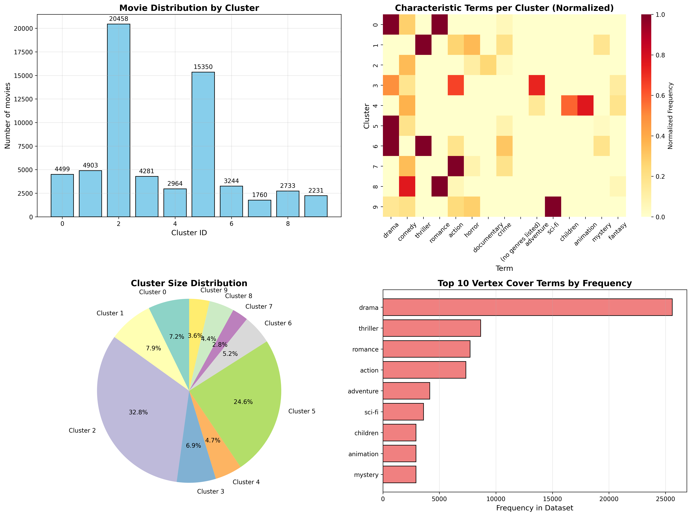

This project demonstrates a novel approach to movie catalog clustering using Vertex Cover-based feature selection combined with Spherical K-Means clustering. By representing movie metadata (genres, tags, keywords) as a graph and applying an efficient vertex cover approximation algorithm, we select the most discriminative features before clustering, resulting in more coherent and interpretable movie groupings.
The key innovation is using Minimum Vertex Cover (MVC) as a feature selection method to identify central terms that capture the strongest relationships in the movie catalog, which significantly improves clustering quality compared to using all features.
movie_clustering/
├── movie_clustering/
│ ├── __init__.py
│ ├── processor.py # Main Algorithm
├── data/
│ ├── raw/ # Original MovieLens data
│ └── processed/ # Processed datasets
├── tests/
│ ├── test_movie_clustering.py
├── requirements.txt
├── setup.py
├── config.yaml # Configuration parameters
└── README.md
# Clone the repository
git clone https://github.com/frankvegadelgado/movie_clustering.git
cd movie_clustering
# Create and activate virtual environment (recommended)
python -m venv venv
source venv/bin/activate # On Windows: venv\Scripts\activate
# Install package and dependencies
pip install -e .
# Install core dependencies
pip install pandas scikit-learn matplotlib seaborn spacy pyyaml
# Install Hvala package for vertex cover algorithm
pip install hvala==0.0.7
# Download spaCy English model
python -m spacy download en_core_web_sm
# Install all dependencies at once
pip install -r requirements.txt
requirements.txt:
# Vertex cover algorithm
hvala==0.0.7
# Core dependencies
pandas>=1.5.0
scikit-learn>=1.2.0
matplotlib>=3.7.0
seaborn>=0.12.0
spacy>=3.5.0
# Configuration management
pyyaml>=6.0
# Data processing and ML utilities
joblib>=1.2.0
threadpoolctl>=3.1.0
pip install movie_clustering
# Download MovieLens 25M dataset
cd data/raw
wget -O ml-25m.zip http://files.grouplens.org/datasets/movielens/ml-25m.zip
unzip ml-25m.zip
cd ../..
# Create a basic configuration file
cat > config.yaml << EOF
data:
movies_path: "data/raw/ml-25m/movies.csv"
tags_path: "data/raw/ml-25m/tags.csv"
output_path: "movie_clusters.csv"
graph:
similarity_threshold: 0.05
clustering:
n_clusters: 10
EOF
# Run the clustering pipeline
movie-cluster
from src.processor import MovieCatalogGraphProcessor
import pandas as pd
# Initialize processor
processor = MovieCatalogGraphProcessor(similarity_threshold=0.05)
# Load and process data
movies_df, terms = processor.load_movielens_data(
movies_path='data/raw/ml-25m/movies.csv',
tags_path='data/raw/ml-25m/tags.csv'
)
# Build graph and find vertex cover
similarity_matrix = processor.build_co_occurrence_matrix(movies_df, terms)
graph = processor.build_term_graph(similarity_matrix)
vertex_cover = processor.find_vertex_cover() # Uses Hvala package
# Create reduced feature vectors
movie_vectors, movie_titles = processor.create_movie_vectors(movies_df)
# Apply spherical k-means clustering
cluster_labels = processor.spherical_kmeans_clustering(movie_vectors, n_clusters=10)
# Analyze results
results_df = processor.analyze_clusters(movies_df, cluster_labels, movie_titles)
# Alternative: Use the console script programmatically
import subprocess
# Run movie-cluster with custom config
result = subprocess.run(['movie-cluster'], capture_output=True, text=True)
print(result.stdout)
find_vertex_cover() with O(m log n) complexity and √2 approximation ratioimport hvala
# Hvala provides efficient vertex cover approximation
graph = ... # NetworkX graph
from hvala.algorithm import find_vertex_cover
vertex_cover = find_vertex_cover(graph)
# Equivalent to K-Means with cosine similarity
from sklearn.cluster import KMeans
import numpy as np
# Normalize vectors to unit sphere
vectors_normalized = vectors / np.linalg.norm(vectors, axis=1, keepdims=True)
kmeans = KMeans(n_clusters=k, random_state=42)
clusters = kmeans.fit_predict(vectors_normalized)
Modify config.yaml to adjust parameters:
# Graph construction parameters
graph:
# Threshold for creating edges in the similarity graph (0.2-0.4 recommended)
similarity_threshold: 0.05
# Minimum frequency for terms to be included in vocabulary
min_term_frequency: 2
# Weight for title terms relative to genres (0.0-1.0)
title_term_weight: 0.3
# Threshold for including genome tags based on relevance score
genome_relevance_threshold: 0.3
# Maximum number of top tags to include from tags.csv
max_top_tags: 200
# Minimum word length for title terms
min_title_word_length: 3
# Clustering parameters
clustering:
# Number of clusters for K-Means
n_clusters: 10
# Maximum iterations for K-Means algorithm
max_iterations: 300
# Random seed for reproducibility
random_state: 42
# Number of K-Means initializations
n_init: 10
# Number of top terms to show per cluster in analysis
top_n_terms_per_cluster: 5
# Data paths
data:
# Path to movies.csv file
movies_path: "data/raw/ml-25m/movies.csv"
# Path to tags.csv file (optional)
tags_path: "data/raw/ml-25m/tags.csv"
# Path to genome-scores.csv (optional)
genome_scores_path: "data/raw/ml-25m/genome-scores.csv"
# Path to genome-tags.csv (optional)
genome_tags_path: "data/raw/ml-25m/genome-tags.csv"
# Output path for clustering results
output_path: "data/processed/clusters.csv"
# Output directory for visualizations
visualization_output_path: "data/processed/visualizations/"
# Processing options
processing:
# Whether to include tags from tags.csv
use_tags: true
# Whether to include genome tags
use_genome_tags: true
# Whether to extract terms from movie titles
use_title_terms: true
# Whether to normalize vectors for spherical K-Means
normalize_vectors: true
# Whether to save intermediate results for debugging
save_intermediate: false
The method typically shows:
# Implement your own data loader
class CustomDataLoader:
def load_terms(self, data_path):
# Extract terms from your data format
pass
# Try different clustering algorithms
from sklearn.cluster import DBSCAN, AgglomerativeClustering
dbscan = DBSCAN(metric='cosine', eps=0.3)
hierarchical = AgglomerativeClustering(n_clusters=10, linkage='average', affinity='cosine')
Hvala installation fails
# Try installing from alternative source
pip install hvala==0.0.7 --extra-index-url https://pypi.org/simple
Memory issues with large datasets
min_term_frequency in configspaCy model download fails
# Download model manually
python -m spacy download en_core_web_sm --direct
processor = MovieCatalogGraphProcessor(debug=True)
# Enables verbose logging and intermediate file saving
git checkout -b feature/amazing-feature)git commit -m 'Add amazing feature')git push origin feature/amazing-feature)git clone https://github.com/frankvegadelgado/movie_clustering.git
cd movie_clustering
pip install -e ".[dev]"
pre-commit install
If you use this code in research, please cite:
@software{movie_clustering,
title = {Movie Catalog Clustering with Vertex Cover Feature Selection},
author = {Vega, Frank},
year = {2025},
url = {https://github.com/frankvegadelgado/movie_clustering}
}
This project is licensed under the MIT License - see the LICENSE file for details.
For questions and support: